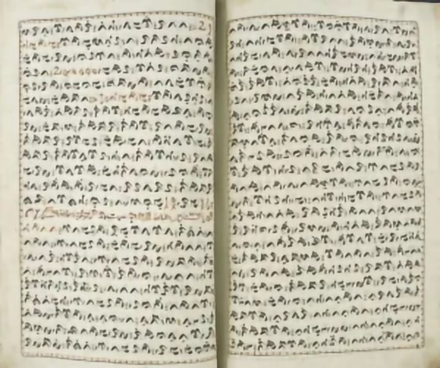
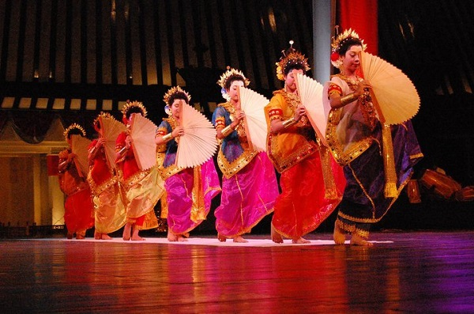

Dibuat oleh Alif Gibran Muhammad Ervin

Bahasa daerah yang dipakai di kota Makassar adalah Bahasa Makassar. Bahasa Makassar adalah bahasa etnis Makassar yang masih dipergunakan hingga sekarang. Karena Suku Makassar adalah salah satu etnis besar, maka penggunaan Bahasa Makassar marak digunakan di wilayah selatan Sulawesi Selatan seperti Gowa, Kepulauan Selayar, dan Jeneponto.

Tari Pakarena adalah tarian tradisional asli suku Makassar dari Sulawesi Selatan yang diiringi oleh 2 kepala drum dan sepasang instrument alat semacam suling.